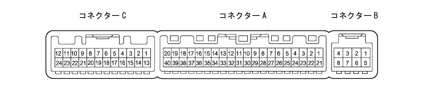
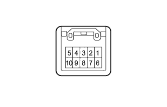

Rear Window Defogger System Terminals of ECU |
Disconnect the air conditioner amplifier assembly connector.
Using SST (Toyota electrical tester), measure the voltage and resistance of each terminal of the vehicle side wire harness connector.

| Inspection Terminal [Terminal Symbol] | Condition | Standard |
|---|---|---|
| A1←→A14 [IG+←→GND] | IG ON | 11 to 14 V |
| A14 ←→ Body ground [GND ←→ Body ground] | Always | Below 1 Ω |
| A21←→A14 [B←→GND] | Always | 11 to 14 V |
Connect the air conditioner amplifier assembly connector.
Using SST (Toyota electrical tester), measure the voltage of each terminal of the connector. Also, when checking pulses, use an oscilloscope.
| Inspection Terminal [Terminal Symbol] | Condition | Standard |
|---|---|---|
| A37←→A14 [LIN1←→GND] | IG ON | Pulse Generation |
| A38←→A14 [RDEF←→GND] | IG ON Rear window defogger switch OFF → ON | 11 to 14 V → 1V or less |
 |
Using SST (Toyota electrical tester), measure the voltage and resistance of each terminal of the connector. Also, when checking pulses, use an oscilloscope.
| Inspection Terminal [Terminal Symbol] | Condition | Standard |
|---|---|---|
| 2←→5 [IG+←→GND] | IG ON | 11 to 14 V |
| 10←→5 [LIN1←→GND] | IG ON | Pulse Generation |
| 5 ←→ Body ground [GND ←→ Body ground] | Always | Below 1 Ω |